슬로건 : 문턱은 없고, 동료는 있다. / CTA : codyssey.kr
설명회 조정실에서 AI로 홍보영상을 만들다 프롬프트를 고칠 때마다 결과가 엉뚱해지는 메타 코미디
최종 영상 : Codyssey_Final_2nd_v4_booth_16x9.mp4 (1920x1080)
총 56.4초 · 15세그먼트 · 조정실·완성 클립(COPA veo-3.1 / B06만 veo-3.1-fast) + v3 실사 클립 재사용 + 프롬프트 입력창 그래픽(Pillow) · 편집 scripts/edit_v4.py(ffmpeg)
| 브랜드 | 코디세이 (Codyssey) — 운영: 이노베이션 아카데미 (과학기술정보통신부·서울특별시·정보통신기획평가원 지원) |
|---|---|
| 정체 | AI·SW 인재 교육 플랫폼. 프랑스 에꼴42 모델 기반의 한국형 교육으로, 강의 위주가 아닌 자기주도·동료학습·프로젝트 기반 학습(PBL)을 중심으로 운영한다. |
| 타겟 | AI·SW 분야로 진입하고 싶은 성인 학습자(전공·경력 무관, 성인 또는 고졸 이상 — 2026 AI 네이티브 모집 공고 기준). 광고 주 타깃: 20~30대 비전공자·커리어 전환 희망자. |
| USP | · 학비·시간 제약 없이 장학금을 받으며 배우는 AI 전문인재 과정 (공식 사이트 문구) · 교수 중심 강의가 아닌 동료학습 + 프로젝트 기반 학습 · 전공·경력 무관 지원 가능 (AI 네이티브 2026 모집 기준) · AI 올인원(18개월)과 AI 네이티브(5개월) 두 트랙 |
| 출처 | https://www.codyssey.kr https://www.syu.ac.kr/4aov https://www.ajunews.com/view/20240930085245816 https://lms.42seoul.kr/en/innovation_academy/business_info/codyssey.html (검색 결과에만 노출, 직접 fetch는 연결 거부로 미확인 — 근거로 단정하지 않음) |
| 사실 확인 한계 | 모집 일정·과정 구성은 변동 가능. 광고에는 일정·금액·취업률 등 미확인 수치를 쓰지 않는다. 에꼴42 기반·동료학습/PBL 특징은 검색 요약(syu.ac.kr, ajunews 등) 근거. |
| 레퍼런스 | 울산 남구 「2026 고래축제가 망한 이유」(https://www.youtube.com/watch?v=fTHUtHvAUe4) — 조정실 프레이밍 + "AI로 금방 만들게요" + 프롬프트를 고칠 때마다 엉뚱해지는 AI 결과물 반복. 장면·대사·인물은 새로 쓰고 구조만 가져온다. |
|---|---|
| 핵심 메시지 3개 | 진입장벽 없음(전공 칸 없다) · 장학금(받으며 배운다) · 동료학습(혼자 못 하겠어요 → 같이 고치자). 마지막 메시지는 광고 속 인물들이 영상을 만드는 과정 자체로 보여준다. |
| 슬로건 | 문턱은 없고, 동료는 있다. / CTA: codyssey.kr |
| 미션 연결 | 광고 안에서 프롬프트 1 → 2 → 3 수정 전/후가 화면에 그대로 나온다. |
| 이름 | 설정 | 고정 묘사(veo 프롬프트에 그대로) |
|---|---|---|
| 팀장 | 50대 남성, 코디세이 설명회 총괄 | a Korean man in his early 50s, short graying hair, black rimless glasses, charcoal suit jacket over a black turtleneck, wireless headset |
| 민준 | 20대 신입, 홍보영상 담당 | a Korean man in his mid 20s, messy black hair, black hoodie, staff lanyard with a blank white card |
| 지은 | 20대 동료 | a Korean woman in her late 20s, low ponytail, round tortoiseshell glasses, cream knit cardigan, staff lanyard with a blank white card |
| (AI 결과물 속) 사부·소라·도현·민석 | v3 실사 클립 그대로 | storyboard/v3/live_shotlist.json 캐릭터 바이블 |
| 조정실 공통 룩 | dark event control booth behind a glass window, faces lit only by cold blue monitor light, slightly high webcam-like angle, handheld documentary realism, Korean live event, no on-screen text, no logos | |
※ 촬영 전 대본 기준 시각. 완성본에서는 B06(팀장 「…안디아모.」)을 엔드카드 앞으로 옮겼다(6장 순서, 8장).
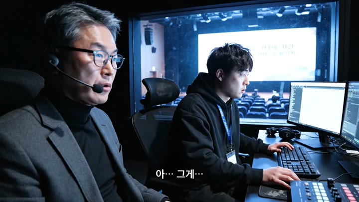
| 소스 | 신규 veo · assets/v4/B01.mp4 (0초부터) |
|---|---|
| 대사·자막 | 민준아, 홍보영상 어디 있어? / 아… 그게… / 지금 AI로 금방 만들게요! |
| 입력 프롬프트(원문) | Handheld documentary-style comedy shot inside a dark event control booth behind a large glass window; beyond the glass, a dim auditorium of a Korean tech education info session. Faces are lit only by cold blue monitor light, slightly high webcam-like angle. Two people: a Korean man in his early 50s (the team lead), short graying hair, black rimless glasses, charcoal suit jacket over a black turtleneck, wireless headset; and a Korean man in his mid 20s (the junior), messy black hair, black hoodie, staff lanyard with a blank white card, sitting at a desk with monitors. 0-2s: The team lead presses his headset and turns to the junior, and says in Korean: "민준아, 홍보영상 어디 있어?" 2-4s: The junior freezes, eyes darting, and mumbles in Korean: "아… 그게…" 4-5s: One second of awkward silence, only the hum of equipment. 5-8s: The junior forces a big confident smile, spins to his keyboard and says loudly in Korean: "지금 AI로 금방 만들게요!" Deadpan Korean office comedy timing, realistic, natural acting. No on-screen text, no subtitles, no logos. No background music. All dialogue is spoken in Korean only. |
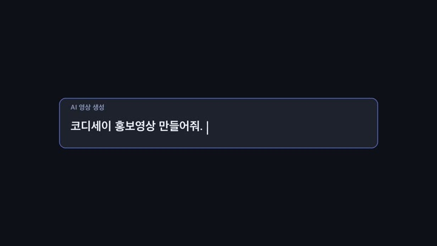
| 소스 | 프롬프트 입력창 그래픽 (Pillow 타이핑 애니메이션) |
|---|---|
| 대사·자막 | 입력 문구: 「코디세이 홍보영상 만들어줘. 웅장하게.」 |
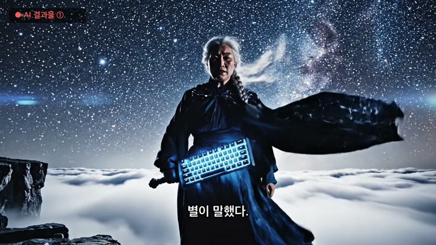
| 소스 | v3 실사 재사용 · assets/v3/live/shot01.mp4 (0초부터) |
|---|---|
| 대사·자막 | ● AI 결과물 ① 별이 말했다. |
| 입력 프롬프트(원문) | Epic wide shot of a vast night sky full of stars, slow dramatic push-in. A lone figure stands on a rocky cliff edge above clouds: a fictional Korean woman in her 60s called the Master, long silver braided hair, stern weathered face, wearing a long deep navy cloak embroidered with silver constellation patterns, carrying a sword shaped like a glowing computer keyboard with visible keycaps. She faces the camera with a grave, unblinking expression, cloak whipping in the wind. Her voice is deep and solemn, spoken slowly. She says in Korean: "별이 말했다." She pauses half a second, then says in Korean: "평범한 자에게도, 부름은 온다." Sound: a huge original orchestral brass hit with deep timpani and choir swell building under the lines, howling wind. Absurdly grand and completely serious. Cinematic live-action Korean TV commercial, 35mm anamorphic lens, shallow depth of field, dramatic rim lighting, deadpan comedic tone with a perfectly serious film-trailer look, natural skin texture, 24fps, 16:9, no on-screen text, no subtitles, no captions, no logos, no watermark. |
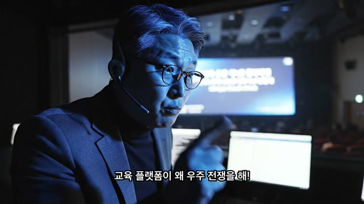
| 소스 | 신규 veo · assets/v4/B02_v2.mp4 (1.0초부터) · job vjob_3b110dc4d9c54b8f977f5403 |
|---|---|
| 대사·자막 | 교육 플랫폼이 왜 우주 전쟁을 해! |
| 입력 프롬프트(원문) | Handheld documentary-style comedy shot inside a dark event control booth behind a large glass window; beyond the glass, a dim auditorium of a Korean tech education info session. Faces are lit only by cold blue monitor light, slightly high webcam-like angle. Close-up of a Korean man in his early 50s (the team lead), short graying hair, black rimless glasses, charcoal suit jacket over a black turtleneck, wireless headset, staring at a monitor off-screen in disbelief, the blue light flickering on his glasses. 0-2s: stunned silence, his jaw slowly drops. 2-6s: he points at the monitor and shouts slowly and clearly in Korean, every syllable distinct, exasperated: "교육 플랫폼이 왜 우주 전쟁을 해!" Deadpan Korean office comedy timing, realistic, natural acting. No on-screen text, no subtitles, no logos. No background music. All dialogue is spoken in Korean only. |
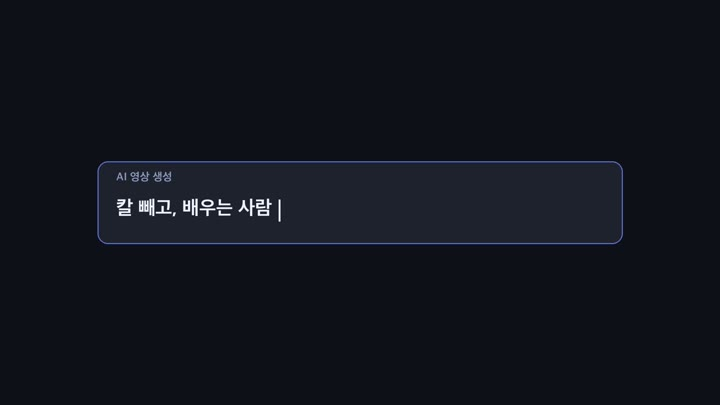
| 소스 | 프롬프트 입력창 그래픽 (Pillow 타이핑 애니메이션) |
|---|---|
| 대사·자막 | 입력 문구: 「칼 빼고, 배우는 사람 얘기로.」 |
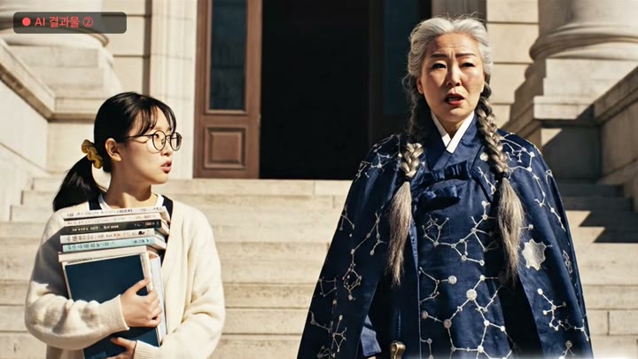
| 소스 | v3 실사 재사용 · assets/v3/live/shot02.mp4 (4.0초부터) |
|---|---|
| 대사·자막 | ● AI 결과물 ② …저 국문과인데요? / 입구에 전공 칸 없다. |
| 입력 프롬프트(원문) | Medium two-shot, locked camera, sunlit university library steps in cream stone. On the left, a fictional Korean woman in her 20s, a literature student, round wire-frame glasses, black shoulder-length hair with a yellow hair tie, cream cardigan, hugging a tall stack of paperback books, walking up the steps. On the right, a fictional Korean woman in her 60s called the Master, long silver braided hair, stern weathered face, wearing a long deep navy cloak embroidered with silver constellation patterns, carrying a sword shaped like a glowing computer keyboard with visible keycaps, standing heroically with her keyboard sword raised toward the sky, wind blowing her cloak. The Master says in Korean in a booming epic voice: "깨어나라, 그대여. 코디세이로 오라." The young woman stops and says in Korean with a small confused voice: "...저 국문과인데요?" Both hold a deadpan silence for one second, the Master only slowly raises one eyebrow, total silence, music cuts dead. Then the Master lowers the sword and says in Korean in a flat, bored, casual voice: "입구에 전공 칸 없다." Sound: grand orchestral hit on the first line, then a sudden record scratch and dead silence. Cinematic live-action Korean TV commercial, 35mm anamorphic lens, shallow depth of field, dramatic rim lighting, deadpan comedic tone with a perfectly serious film-trailer look, natural skin texture, 24fps, 16:9, no on-screen text, no subtitles, no captions, no logos, no watermark. |
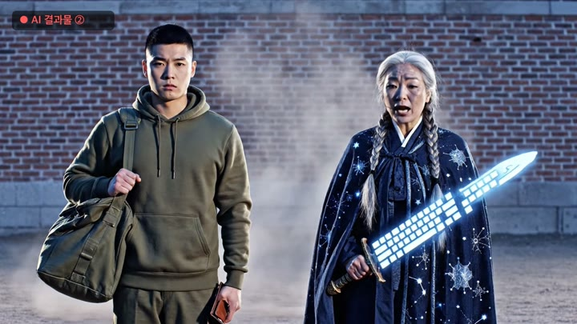
| 소스 | v3 실사 재사용 · assets/v3/live/shot04.mp4 (5.1초부터) |
|---|---|
| 대사·자막 | ● AI 결과물 ② 통장이 비었습니다! / 장학금 받으며 배운다. |
| 입력 프롬프트(원문) | Medium two-shot, locked camera, an old brick wall of a military parade ground, cobalt-blue dusk light. On the left, a fictional Korean man in his 20s just discharged from the army, short buzz-cut hair, olive-khaki hoodie, olive duffel bag on his shoulder, upright posture, standing at attention. a fictional Korean woman in her 60s called the Master, long silver braided hair, stern weathered face, wearing a long deep navy cloak embroidered with silver constellation patterns, carrying a sword shaped like a glowing computer keyboard with visible keycaps stands on the right with her keyboard sword pointing at him. The Master says in Korean in a booming epic voice: "그대 안의 코드도 깨어났다. 코디세이로 오라." The young man snaps a crisp salute and says in Korean: "충성! ...통장이 비었습니다!" while turning his empty wallet inside out. Both hold a deadpan silence for one second, a gust of dust, total silence. Then the Master says in Korean in a flat, bored voice: "장학금 받으며 배운다." Sound: epic orchestral hit, salute snap, then sudden dead silence, then a tiny wind. Cinematic live-action Korean TV commercial, 35mm anamorphic lens, shallow depth of field, dramatic rim lighting, deadpan comedic tone with a perfectly serious film-trailer look, natural skin texture, 24fps, 16:9, no on-screen text, no subtitles, no captions, no logos, no watermark. |
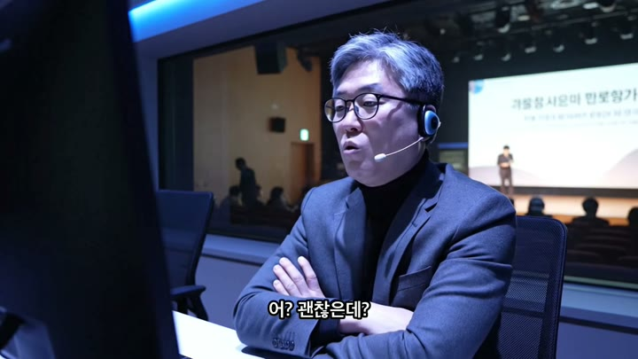
| 소스 | 신규 veo · assets/v4/B03.mp4 (0초부터) · job vjob_f1164018c01d49b4a9318f13 |
|---|---|
| 대사·자막 | 어? 괜찮은데? |
| 입력 프롬프트(원문) | Handheld documentary-style comedy shot inside a dark event control booth behind a large glass window; beyond the glass, a dim auditorium of a Korean tech education info session. Faces are lit only by cold blue monitor light, slightly high webcam-like angle. Medium shot of a Korean man in his early 50s (the team lead), short graying hair, black rimless glasses, charcoal suit jacket over a black turtleneck, wireless headset with arms crossed, watching a monitor off-screen. 0-1s: he slowly uncrosses his arms, eyebrows rising, nodding slightly. 1-4s: he mutters in Korean, surprised and impressed: "어? 괜찮은데?" Deadpan Korean office comedy timing, realistic, natural acting. No on-screen text, no subtitles, no logos. No background music. All dialogue is spoken in Korean only. |
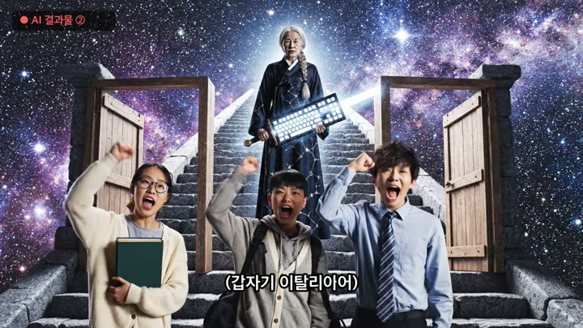
| 소스 | v3 실사 재사용 · assets/v3/live/shot08_v2.mp4 (4.4초부터) |
|---|---|
| 대사·자막 | ● AI 결과물 ② (갑자기 이탈리아어) / Andiamo insieme! |
| 입력 프롬프트(원문) | Wide locked shot of a long stone staircase floating in the starry cosmos. At the top of the stairs stands the Master, a fictional Korean woman in her 60s with long silver braided hair, a stern weathered face, wearing a long deep navy cloak embroidered with silver constellation patterns, holding a sword shaped like a glowing computer keyboard. Below her, three young people arrive from three separate empty wooden doorframes and stop awkwardly facing each other. They keep exactly these outfits: a Korean woman in her 20s with round wire-frame glasses and a yellow hair tie wearing a cream cardigan and hugging a stack of books; a Korean man in his 20s with a buzz cut wearing an olive-khaki hoodie with an olive duffel bag; a Korean man in his 30s with messy hair wearing a cobalt-blue dress shirt and navy tie. The office worker says in Korean: "...저분들도요?" The army man salutes and says in Korean: "충성! 동료입니까!" The Master says in Korean in a flat deadpan voice: "여기 교수는 없다. 동료가 있다. 나도 동료한테 배웠다." Then all three young people raise their fists together and shout in Korean in unison: "같이 갑니다!" Sound: awkward silence with wind, then a grand orchestral swell and choir on the shout. Cinematic live-action Korean TV commercial, 35mm lens, shallow depth of field, natural skin texture, realistic people, 24fps, 16:9, absolutely no on-screen text, no subtitles, no captions, no lower-third text, no logos, no watermark. |
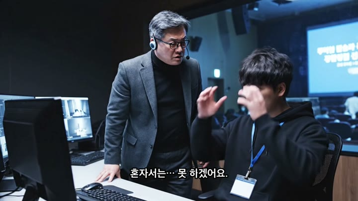
| 소스 | 신규 veo · assets/v4/B04.mp4 (0초부터) · job vjob_0085f0c2b9364810935646ee |
|---|---|
| 대사·자막 | 이탈리아어는 왜 나와?! / 혼자서는… 못 하겠어요. |
| 입력 프롬프트(원문) | Handheld documentary-style comedy shot inside a dark event control booth behind a large glass window; beyond the glass, a dim auditorium of a Korean tech education info session. Faces are lit only by cold blue monitor light, slightly high webcam-like angle. Two people: a Korean man in his early 50s (the team lead), short graying hair, black rimless glasses, charcoal suit jacket over a black turtleneck, wireless headset and a Korean man in his mid 20s (the junior), messy black hair, black hoodie, staff lanyard with a blank white card sitting at the desk. 0-2s: the team lead jumps up out of his chair and shouts in Korean: "이탈리아어는 왜 나와?!" 2-3s: silence. 3-6s: the junior grabs his head with both hands, slumps over the keyboard and says quietly in Korean, defeated: "혼자서는… 못 하겠어요." Deadpan Korean office comedy timing, realistic, natural acting. No on-screen text, no subtitles, no logos. No background music. All dialogue is spoken in Korean only. |
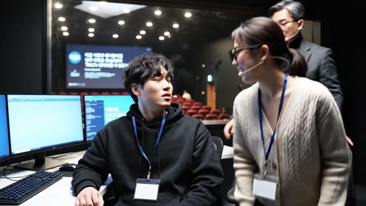
| 소스 | 신규 veo · assets/v4/B05.mp4 (0초부터) · job vjob_297b0e517a9d4436b93bd325 |
|---|---|
| 대사·자막 | 같이 고치자. · 묵음 구간 1.05~4.5초 |
| 입력 프롬프트(원문) | Handheld documentary-style comedy shot inside a dark event control booth behind a large glass window; beyond the glass, a dim auditorium of a Korean tech education info session. Faces are lit only by cold blue monitor light, slightly high webcam-like angle. a Korean man in his mid 20s (the junior), messy black hair, black hoodie, staff lanyard with a blank white card sits slumped at the desk. 0-2s: a Korean woman in her late 20s (the colleague), low ponytail, round tortoiseshell glasses, cream knit cardigan, staff lanyard with a blank white card rolls into the frame on a wheeled office chair and stops right beside him, and says warmly in Korean: "같이 고치자." 2-4s: the junior lifts his head, looks at her, and answers in Korean with renewed energy: "…네!" 4-6s: a Korean man in his early 50s (the team lead), short graying hair, black rimless glasses, charcoal suit jacket over a black turtleneck, wireless headset leans in from behind, and all three look at the same monitor together, the junior and the colleague typing side by side. Deadpan Korean office comedy timing, realistic, natural acting. No on-screen text, no subtitles, no logos. No background music. All dialogue is spoken in Korean only. |
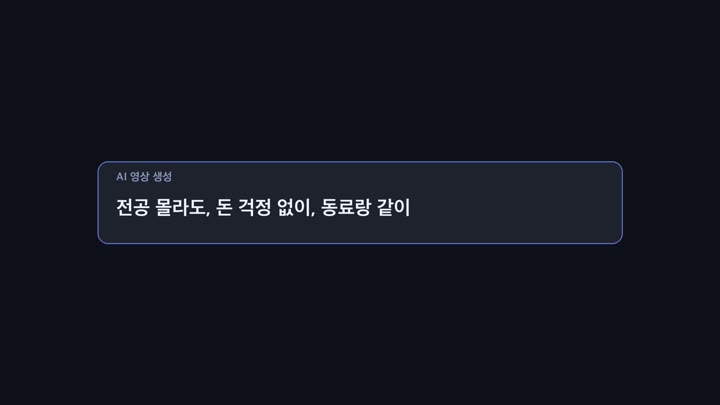
| 소스 | 프롬프트 입력창 그래픽 (Pillow 타이핑 애니메이션) |
|---|---|
| 대사·자막 | 입력 문구: 「전공 몰라도, 돈 걱정 없이, 동료랑 같이 배우는 곳.」 |
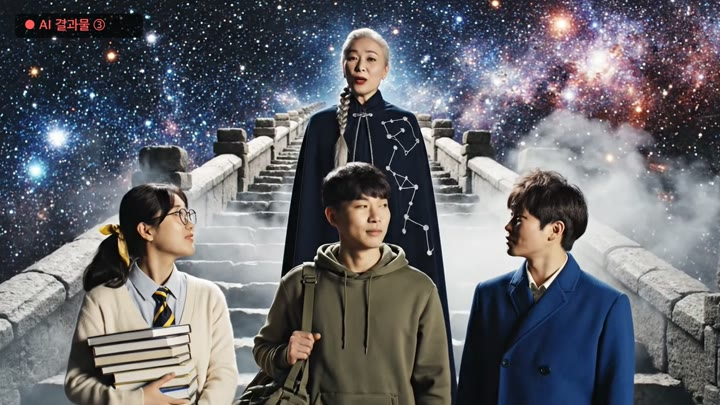
| 소스 | 신규 veo · assets/v4/F01_v2.mp4 (0초부터) · job vjob_db52fb7c601a4b9fb5f33e7a |
|---|---|
| 대사·자막 | ● AI 결과물 ③ 같이 갑니다! / 여기 교수는 없다. / 동료가 있다. |
| 입력 프롬프트(원문) | Wide locked shot, filmed for real on a practical set with real atmospheric haze and consistent lighting, not a composite, of a long stone staircase floating in the starry cosmos. a fictional Korean woman in her 20s, a literature student, round wire-frame glasses, black shoulder-length hair with a yellow hair tie, cream cardigan, hugging a tall stack of paperback books, a fictional Korean man in his 20s just discharged from the army, short buzz-cut hair, olive-khaki hoodie, olive duffel bag on his shoulder, upright posture, and a fictional Korean man in his 30s, an exhausted office worker, messy hair, cobalt-blue dress shirt, loose navy tie, white employee ID badge on a lanyard, stand side by side on the steps, smiling, exactly three young people and no one else. Above them stands a fictional Korean woman in her 60s called the Master, very long silver hair in a single thick braid over her shoulder, wrinkled stern weathered face, wearing a long deep navy cloak embroidered with silver constellation patterns. 0-3s: the three young people look straight at the camera and shout together in Korean, in unison: "같이 갑니다!" 3-4s: brief pause. 4-8s: the Master smiles faintly and says in Korean in a calm, warm voice: "여기 교수는 없다. 동료가 있다." Sound: grand original orchestral swell on the shout, then gentle wind. Cinematic live-action Korean TV commercial, 35mm anamorphic lens, shallow depth of field, dramatic rim lighting, natural skin texture, 16:9, no swords, no weapons, no on-screen text, no subtitles, no captions, no logos, no watermark. All dialogue is spoken in Korean only, never Italian or any other language. |
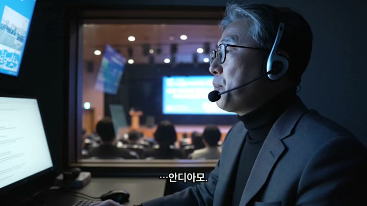
| 소스 | 신규 veo · assets/v4/B06_v2.mp4 (0초부터) · job vjob_8e20326c10954da7a88a6244 |
|---|---|
| 대사·자막 | …안디아모. |
| 입력 프롬프트(원문) | Handheld documentary-style comedy shot inside a dark event control booth behind a large glass window; beyond the glass, a dim auditorium of a Korean tech education info session. Faces are lit only by cold blue monitor light, slightly high webcam-like angle. Medium close-up of a Korean man in his early 50s (the team lead), short graying hair, black rimless glasses, charcoal suit jacket over a black turtleneck, wireless headset alone, watching a monitor off-screen, his face softening, the auditorium applauding faintly beyond the glass. 0-1s: he exhales. 1-3s: he quietly mutters to himself in a low voice: "…안디아모." 3-4s: he gives a tiny embarrassed smile. Deadpan Korean office comedy timing, realistic, natural acting. No on-screen text, no subtitles, no logos. No background music. He says only one short word, softly: "안디아모." |
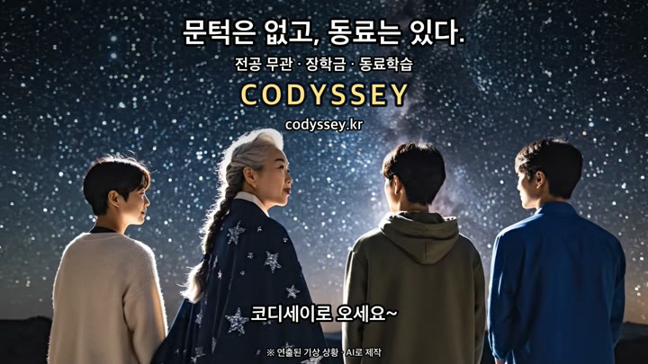
| 소스 | v3 실사 재사용 · assets/v3/live/shot10_v2.mp4 (1.0초부터) |
|---|---|
| 대사·자막 | 코디세이로 오세요~ |
| 입력 프롬프트(원문) | Locked wide shot from behind. Four people stand in a row on a cliff edge, seen from the back, under a huge sky full of glittering stars: a fictional Korean woman in her 60s with long silver braided hair, wearing a long deep navy cloak with silver star patterns, and three young adults in a cream cardigan, an olive-khaki hoodie and a cobalt-blue shirt. The upper half of the frame is calm open starry sky. The older woman turns her head slightly and says warmly in Korean with a faint smile in her voice: "코디세이로 오세요~" Sound: warm soft original orchestral resolve, gentle wind. Cinematic live-action Korean TV commercial, 35mm anamorphic lens, shallow depth of field, soft rim lighting, natural skin texture, 24fps, 16:9, no on-screen text, no subtitles, no captions, no logos, no watermark. |
| 순서 | 입력창 문구 | AI 결과물 |
|---|---|---|
| ① | 코디세이 홍보영상 만들어줘. 웅장하게. | 우주 절벽 위 사부 「별이 말했다.」 → 팀장 「교육 플랫폼이 왜 우주 전쟁을 해!」 |
| ② | 칼 빼고, 배우는 사람 얘기로. | 국문과·통장 장면은 괜찮다가 끝에 갑자기 이탈리아어 「Andiamo insieme!」 |
| ③ | 전공 몰라도, 돈 걱정 없이, 동료랑 같이 배우는 곳. | 셋이 「같이 갑니다!」, 사부 「여기 교수는 없다. 동료가 있다.」 |
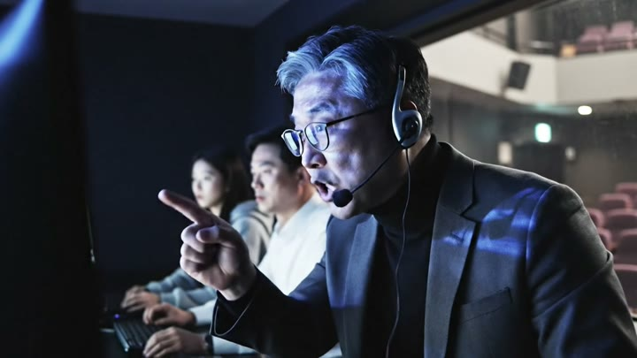
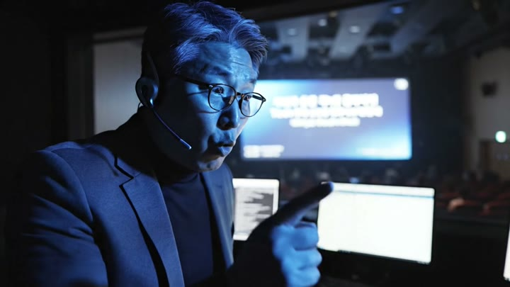
이유·결과. B02·F01은 1차 생성의 발음/인물 불일치로 재생성(storyboard_v4_booth.md 제작 결과). v2 프롬프트는 0~2초 정적 후 2~6초에 "every syllable distinct"로 천천히 외치게 했고, 편집에서 1.0초부터 4.3초 길이를 썼다.
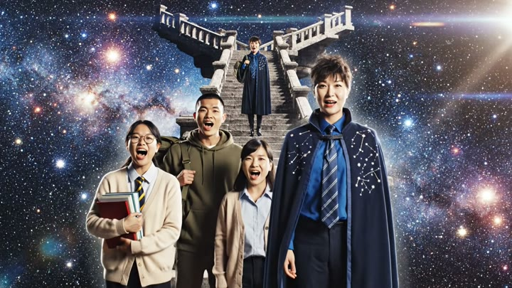
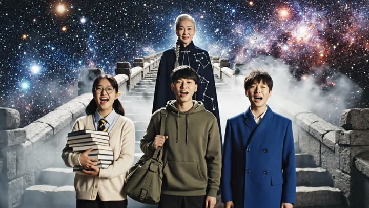
이유·결과. B02·F01은 1차 생성의 발음/인물 불일치로 재생성(storyboard_v4_booth.md 제작 결과). 편집에서 v2의 0~7.2초를 썼다.
| 영역 | 문제 | 대응·결과 |
|---|---|---|
| B06 생성 | veo-3.1 생성이 두 번 멈춤 | veo-3.1-fast로 생성(B06_v2) |
| B05 대사 | 민준의 "…네!"를 veo가 다른 대사로 생성 | 1.05초 이후 묵음 처리, 지은 "같이 고치자."만 사용 |
| v3 이탈리아어 | v3 클립이 실제로 이탈리아어로 나옴(언어 감지 it 0.98, "La strada è ancora lunga, andiamo insieme!") | 결함을 "AI가 엉뚱하게 만든 결과물"로 쓰고, 마지막 팀장 「…안디아모.」의 복선으로 회수 |
| 순서 변경 | B06이 엔드카드 뒤에 있으면 마지막 5초가 브랜드가 아님 | B06을 엔드카드 앞으로 옮겨 마지막 5초를 브랜드/CTA로 고정 |
| 검증 | 완성본을 faster-whisper로 다시 받아써 자막 시각과 대조, 모든 대사 자막이 실제 발화 ±0.4초 안 | |
| 파일명 | 길이 | 해상도 | fps | 코덱 | 크기 |
|---|---|---|---|---|---|
| output/final/Codyssey_Final_2nd_v4_booth_16x9.mp4 | 56.4초 | 1920x1080 | 30/1 | H264 / AAC 48000Hz 2ch | 67.1MB |
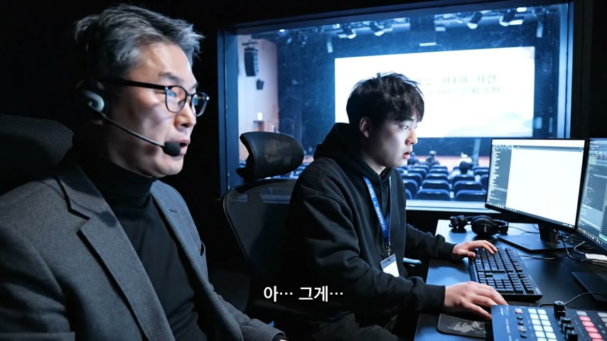
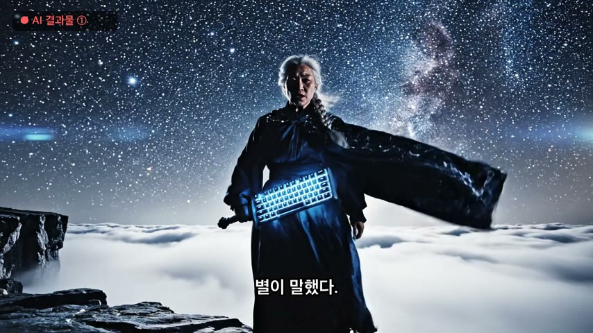
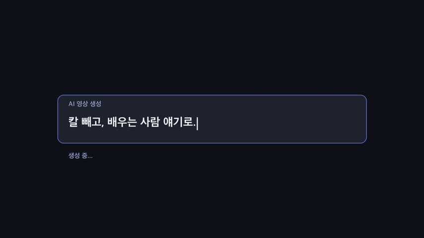
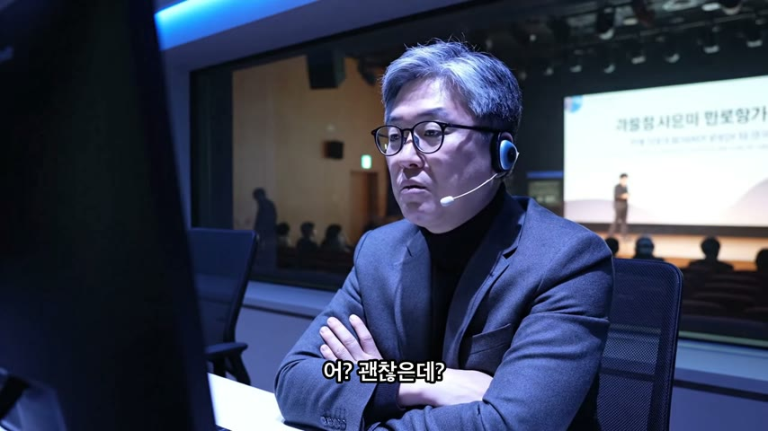
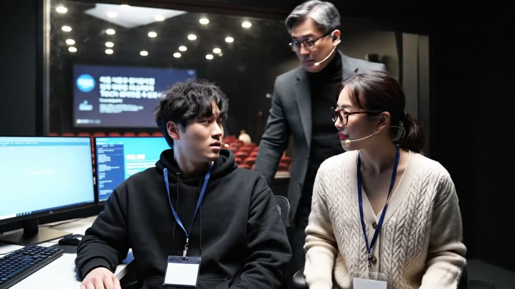
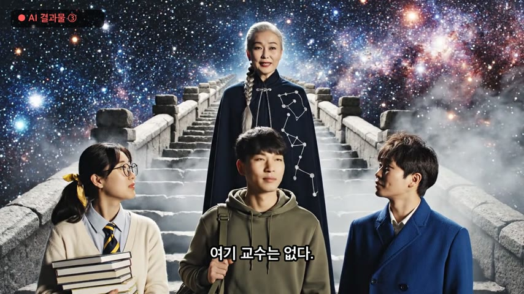
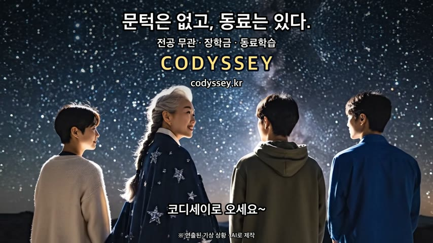
최종 영상 프레임 캡처(3초, 9초, 18초, 27초, 37초, 47초, 54초). 값은 ffprobe 실측.